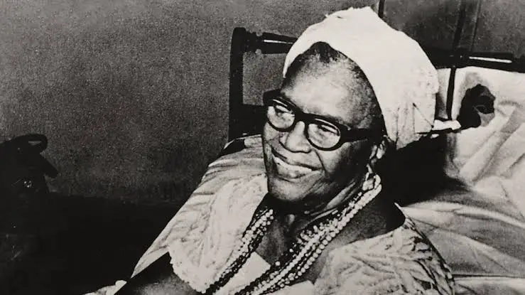

Exposição Consciência Negra
Religiosidade e Cultura Ancestral

Mãe Menininha do Gantois
(Salvador, Bahia, 1894–1986)
À frente do Terreiro do Gantois desde 1922, teve papel decisivo a partir dos anos 1940 no diálogo inter-religioso e na defesa da liberdade de culto. Ela abriu as portas do candomblé para a sociedade, transformando o terreiro em um símbolo de resistência cultural em Salvador.
Obras e Projetos de Destaque
- Tombamento do Terreiro do Gantois: Conduziu o Ilê Axé Iyá Omin Iyamassê a se consolidar como patrimônio histórico e cultural brasileiro, formalmente reconhecido pelo IPHAN.
- Luta pelo Fim da Autorização Policial: Articulou decisivamente pela revogação da exigência legal de licença policial prévia para os cultos de matriz africana na Bahia (Decreto Estadual nº 25.093/1976).
- Memorial Mãe Menininha: Iniciativa de salvaguarda de acervo que deu origem ao memorial dedicado à preservação das indumentárias, alfaias litúrgicas e documentos do Gantois.
- Patrimônio Imaterial e Inspiração Musical: Sua sabedoria inspirou canções imortais da MPB, como "Oração de Mãe Menininha" de Dorival Caymmi, gravada por Gal Costa e Maria Bethânia.
- Documentário "Mãe Menininha: A Estrela do Gantois": Produção audiovisual biográfica dirigida pelo jornalista Ricardo Ishmael (TV Bahia / Globoplay), gravada entre o Brasil e Abeokuta (Nigéria), reunindo dezenas de depoimentos de familiares, intelectuais e artistas (como Maria Bethânia e Gilberto Gil) para celebrar seu legado e liderança religiosa.